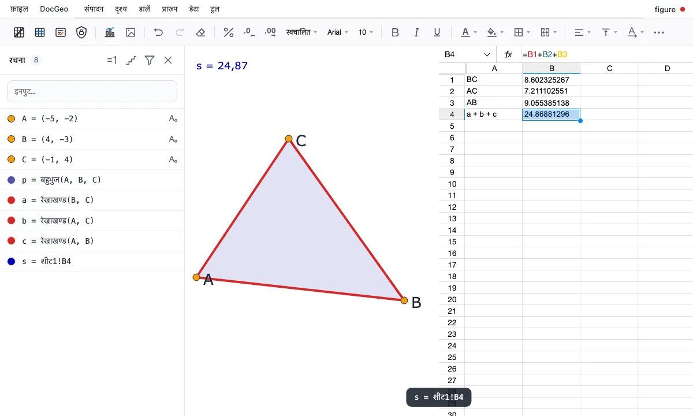

स्प्रेडशीट
DocGeo के किसी टैब में DocCells की एक वर्कशीट हो सकती है, जो DocTools की स्प्रेडशीट है: आकृति के बगल में, या अकेले अपने टैब में। आकृति और सेल एक-दूसरे को लाइव पढ़ते हैं।

ऊपर के उदाहरण में:
-
सेल B1 से B3 त्रिभुज की भुजाओं a, b और c की लंबाइयाँ पढ़ते
हैं:
=GEO("a")…; - B4 उनका योग करता है:
=B1+B2+B3; -
आकृति इस योग को पंक्ति
s = !B4से वापस पढ़ती है।
A, B या C को खींचने पर, सेल और s गति के दौरान साथ
चलते हैं।
स्प्रेडशीट जोड़ना
| क्रिया | कैसे |
|---|---|
| आकृति के बगल में | फ़ाइल › दृश्य › नया स्प्रेडशीट दृश्य: दाईं ओर एक और कॉलम, खाली शीट के साथ; सभी कॉलम एक जैसी चौड़ाई लेते हैं (कई दृश्य) |
| अपने टैब में | फ़ाइल › नया स्प्रेडशीट टैब: «स्प्रेडशीट1», «स्प्रेडशीट2»… नाम का टैब, जिसमें केवल एक शीट होती है (वर्कबुक) |
| आकार बदलना, खिसकाना | कॉलमों के विभाजक को खींचें; स्प्रेडशीट दृश्य सक्रिय होने पर फ़ाइल › दृश्य › दृश्य को बाईं ओर ले जाएँ या दाईं ओर |
| हटाना | फ़ाइल › दृश्य › स्प्रेडशीट दृश्य हटाएँ: दृश्य और उसके सेल हट जाते हैं, आकृति फिर से जगह ले लेती है। स्प्रेडशीट टैब किसी भी टैब की तरह हटाया जाता है। |
- किसी टैब में अधिकतम एक स्प्रेडशीट दृश्य होता है: पहले से एक होने पर नया स्प्रेडशीट दृश्य धूसर रहता है।
- स्प्रेडशीट दृश्य केवल एक शीट दिखाता है, शीट टैबों के बिना। कई शीटों पर काम करने के लिए कई स्प्रेडशीट टैब बनाएँ, जो एक-दूसरे को पढ़ते हैं (नीचे देखें)।
- स्प्रेडशीट दृश्य जोड़ना या हटाना, दृश्यों पर अन्य क्रियाओं की तरह, पूर्ववत किया जा सकता है।
स्प्रेडशीट के मेनू और बटन
सेलों में एक क्लिक या कुंजी दबाने से स्प्रेडशीट दृश्य सक्रिय हो जाता है। तब DocGeo की पट्टियाँ उसी ऊँचाई पर स्प्रेडशीट की पट्टियों को जगह देती हैं: नीचे कुछ नहीं हिलता।
- मेनू पट्टी में फ़ाइल रहता है, उसके बाद DocGeo मेनू, फिर स्प्रेडशीट के मेनू।
- स्प्रेडशीट की बटन पट्टी (संख्या प्रारूप, फ़ॉन्ट, बोल्ड, रंग, किनारे, संरेखण…) DocGeo की क्रिया पट्टी की जगह ले लेती है।
- DocGeo मेनू वह देता है जो उपयोगी रहता है: रचना का इतिहास, टूल पैलेट, गुण, और उपयोगकर्ता मार्गदर्शिका।
- आकृति में या «रचना» पैनल में क्लिक करने, वहाँ कोई पंक्ति लिखने, या टैब बदलने से DocGeo की पट्टियाँ लौट आती हैं। स्प्रेडशीट टैब में स्प्रेडशीट की पट्टियाँ बनी रहती हैं।
- स्प्रेडशीट का कोई संवाद (सशर्त स्वरूपण, संख्या प्रारूप…) बंद होने तक DocGeo की पूरी खिड़की पर परदा डाल देता है।
स्प्रेडशीट टैब में भी «रचना» पैनल उपलब्ध रहता है (DocGeo › रचना का इतिहास): वहाँ लिखा गया ऑब्जेक्ट गणना किया जाता है पर खींचा नहीं जाता, और उस टैब के सेल उसे पढ़ सकते हैं।
जब DocGeo किसी दूसरे पेज, जैसे DocTools, में एम्बेड हो, तो उसकी मेनू पट्टी नहीं होती: स्प्रेडशीट अपनी पट्टियाँ अपने कॉलम के ऊपर रखती है।
आकृति सेल पढ़ती है
आकृति का सूत्र टैब के स्प्रेडशीट दृश्य के किसी सेल को एक
विस्मयादिबोधक चिह्न और उसके बाद सेल के पते से दर्शाता है:
!B3।
| लेखन | मान |
|---|---|
!B3 |
सेल B3 |
!B2:B21 |
एक पंक्ति या एक कॉलम की रेंज: मानों की सूची |
!A1:C3 |
एक आयत: पंक्तियों की सूची, हर एक एक सूची |
स्प्रेडशीट1!B3 |
किसी स्प्रेडशीट टैब का सेल B3 |
'आकृति 1'!!B3 |
किसी दूसरे टैब के स्प्रेडशीट दृश्य का सेल B3 |
A = (!B1, !B2)
r = !B3
L = !A1:A10-
पता बड़े अक्षरों और फिर अंकों में लिखा जाता है
(
B3,AA12),$के बिना, विस्मयादिबोधक चिह्न के ठीक बाद। A1 नाम के ऑब्जेक्ट का निषेध!(A1)लिखा जाता है। -
संख्या, टेक्स्ट, बूलियन या सूची वैसे ही पढ़ी जाती है; तारीख
संख्या के रूप में पढ़ी जाती है। सेल में वर्ग कोष्ठकों में
लिखी सूची,
[2, 1], या गणना की गई सूची हो सकती है:=[2, 1]*3। खाली या त्रुटि वाला सेल (#DIV/0!…) अपरिभाषित मान देता है: उसे पढ़ने वाला ऑब्जेक्ट नहीं खींचा जाता। - जैसे ही कोई सेल बदलता है, लिखने से या स्प्रेडशीट की गणना से, उसे पढ़ने वाले ऑब्जेक्ट फिर से गणना किए और खींचे जाते हैं।
- संदर्भ सूत्र का केवल एक हिस्सा है: वह कोई ऑब्जेक्ट नहीं बनाता। सेलों से पढ़ा गया बिंदु, जैसे ऊपर A, गणना किया हुआ है: वह माउस से नहीं खिसकता। उसे खिसकाने के लिए सेल बदलें।
दूसरे टैब के सेल
पहले टैब का नाम आता है, यदि उसमें रिक्त स्थान या कोई चिह्न हो तो
एकल उद्धरण चिह्नों में, जैसे
दूसरा टैब पढ़ने में:
स्प्रेडशीट1!B3। अगर उस टैब में आकृति भी हो, तो
विस्मयादिबोधक चिह्न दो बार लिखें, 'आकृति 1'!!B3,
क्योंकि 'आकृति 1'!B3 उसकी आकृति के ऑब्जेक्ट B3 को
दर्शाता है। उसके सेल वैसे पढ़े जाते हैं जैसे वह टैब छोड़ते समय
गणना किए गए थे।
सेल आकृति पढ़ते हैं: GEO
किसी सेल में, फ़ंक्शन GEO आकृति के किसी ऑब्जेक्ट का
मान पढ़ता है, जिसका नाम उद्धरण चिह्नों में दिया जाता है।
=GEO("c")
=GEO("'आकृति 1'!c")
=2*GEO("r")+1- मान वही है जो आकृति का कोई सूत्र ऑब्जेक्ट का नाम लेकर पढ़ता: रेखाखंड की लंबाई, व्यंजक या स्लाइडर का मान, टेक्स्ट, चेकबॉक्स की स्थिति… आकृति को चलाते समय वह साथ चलता है।
-
बिंदु उसके निर्देशांकों की सूची के रूप में पढ़ा जाता है:
=GEO("A")[1, 2]देता है, जिस पर सूची की तरह गणना होती है:=GEO("A")*2। -
अज्ञात या अपरिभाषित ऑब्जेक्ट, या जो न संख्या है, न टेक्स्ट,
न बूलियन, न बिंदु, न सूची,
#N/Aदेता है। नाम सूत्र में लिखा होना चाहिए:=GEO(A1)#VALUE!देता है। -
GEO("'आकृति 1'!c")दूसरे टैब का ऑब्जेक्ट c पढ़ता है: इसी तरह स्प्रेडशीट टैब कोई आकृति पढ़ता है। -
GEOका नाम सभी भाषाओं में एक ही है। यह केवल DocGeo में है: अकेले DocCells में यह#N/Aदेता है।
चक्रीय संदर्भ
GEO द्वारा पढ़ा गया ऑब्जेक्ट ऐसे सेल पर निर्भर नहीं
हो सकता जो उस पर निर्भर हो। यदि A1 में
=GEO("m")+1 है, तो पंक्ति
m = !A1 से m को फिर से परिभाषित करना अस्वीकार
होता है: «चक्रीय संदर्भ: !A1»।
इसी तरह, आकृति के साथ चक्र बंद करने वाला सेल सूत्र इसी संदेश के साथ रद्द हो जाता है, और सेल अपनी पिछली सामग्री वापस पा लेते हैं। जिस फ़ाइल में फिर भी चक्र हो, उसमें उसे बंद करने वाला पठन अपरिभाषित होता है।
पूर्ववत करना और सहेजना
- सेलों का अपना पूर्ववत है: सेलों में Ctrl Z, या स्प्रेडशीट के मेनू। DocGeo के बटन स्प्रेडशीट में लिखा हुआ पूर्ववत नहीं करते।
-
सेल, उनके सूत्र और उनका स्वरूपण आकृति के साथ उसी
.dgoफ़ाइल में सहेजे जाते हैं। सेलों में Ctrl S, या फ़ाइल › सहेजें, सब कुछ सहेजता है।
छात्रों के लिए
DocGeo का रीडर, वेब पेज में एम्बेड की गई आकृति की तरह, शीट को उसके मेनू और बटनों के बिना, उसकी सूत्र पट्टी के साथ दिखाता है।
- छात्र सेलों में लिख सकता है, जैसे किसी इनपुट फ़ील्ड में: आकृति साथ चलती है।
- रीसेट बटन सेलों को वैसा लौटा देता है जैसे वे सहेजे गए थे।
- ये प्रविष्टियाँ उस उत्तर का हिस्सा नहीं हैं जिसे आकृति को एम्बेड करने वाला पेज रखता है: केवल आकृति के ऑब्जेक्ट।
स्प्रेडशीट एक अलग ऐप्लिकेशन है, जो केवल तभी लोड होता है जब दिखाए
गए टैब में स्प्रेडशीट हो। जिस साइट पर DocGeo की अपनी प्रति होस्ट
है, वहाँ doccells फ़ोल्डर DocGeo के फ़ोल्डर के बगल
में प्रकाशित होना चाहिए; अन्यथा स्प्रेडशीट दृश्य «⚠ DocCells»
दिखाता है, और आकृति का बाकी हिस्सा काम करता है।